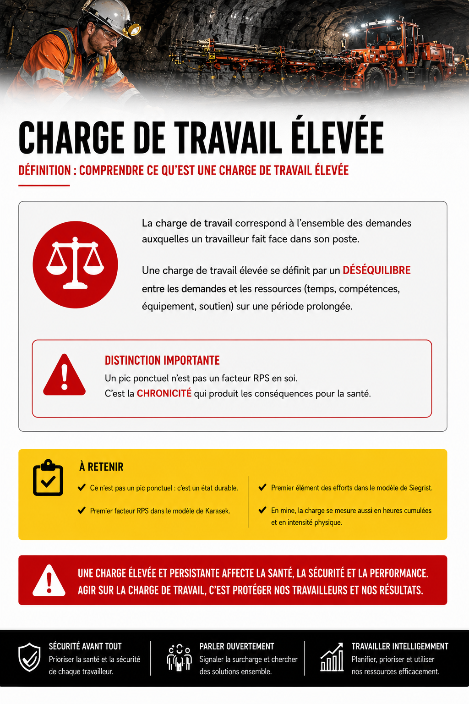
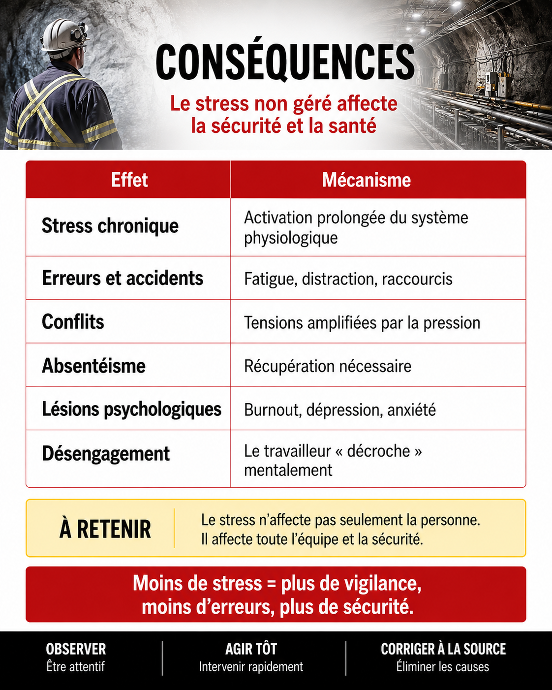
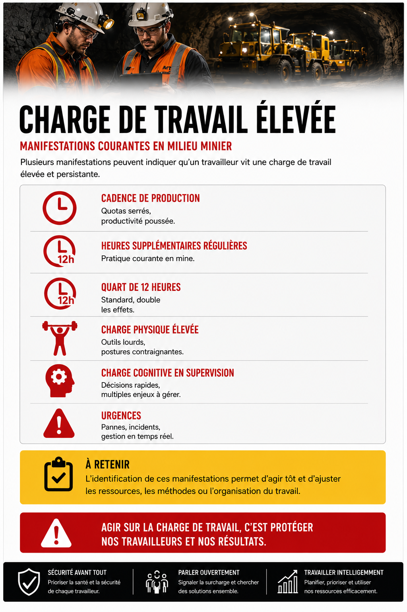
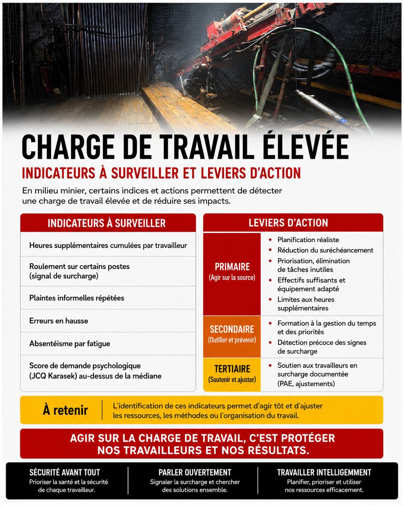

Charge de travail élevée
Un article du wiki 🧠 SST psychosociale
Sommaire
Table des matières

Trois dimensions de la charge
| Dimension | Définition |
|---|---|
| Quantitative | Volume de travail à abattre dans un temps donné |
| Qualitative (cognitive) | Complexité, exigences mentales, prises de décision |
| Émotionnelle | Demandes émotionnelles (gestion de conflits, exposition à la détresse) |
Une charge peut être élevée sur une dimension sans l'être sur les autres. L'analyse doit couvrir les trois.
Conséquences

| Effet | Mécanisme |
|---|---|
| Stress chronique | Activation prolongée du système physiologique |
| Erreurs et accidents | Fatigue, distraction, raccourcis |
| Conflits | Tensions amplifiées par la pression |
| Absentéisme | Récupération nécessaire |
| Lésions psychologiques | Burnout, dépression, anxiété |
| Désengagement | Le travailleur « décroche » mentalement |
Voir Conséquences du stress sur la santé et MBI, épuisement professionnel.
Application en mines


Documents et outils
| Document | Type | Source |
|---|---|---|
| Sous-échelle « Demandes psychologiques » du Questionnaire de Karasek (JCQ) Karasek | Instrument | INSPQ |
| Grille INSPQ d'identification des RPS, dimension charge | INSPQ | |
| Outils d'évaluation de la Confinement, profondeur et charge mentale (NASA-TLX) | Instrument | NASA |
| Guide INRS sur la charge de travail | inrs.fr | |
| Indicateurs RH d'analyse de la charge | Variables | RH |
Voir le centre de ressources : 📁 Documents et outils.
Pour aller plus loin
Références
- Karasek, R. (1979). Job demands, job decision latitude, and mental strain.
- INSPQ. Grille d'identification des risques psychosociaux du travail.
Articles wiki connexes
Pages qui pointent ici (14)
- ✅Iso-strain SST psychosociale
- 📖 Glossaire SST psychosociale
- 🔤 Index alphabétique SST psychosociale
- 00 - 🏠 Accueil SST psychosociale
- Ambiguïté et conflit de rôle SST psychosociale
- Aménagement des horaires et rotations SST psychosociale
- Conditions de Travail SST psychosociale
- Conditions de Travail SST psychosociale
- Confinement, profondeur et charge mentale SST psychosociale
- Dimensions psychosociales du travail SST psychosociale
- Facteurs de risque psychosociaux SST psychosociale
- Faible latitude décisionnelle SST psychosociale
- Horaires atypiques et travail de nuit SST psychosociale
- Modèle de Karasek SST psychosociale